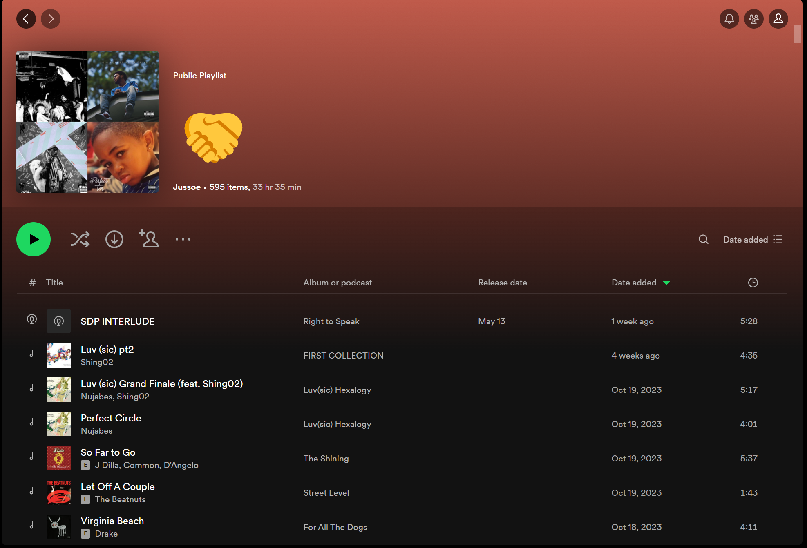

Welkom!
Hoi! Ik ben Justin, 18 jaar. Ik heb deze site gemaakt om mijn muzieksmaak op een creatieve manier te kunnen uiten. Ik luister al een lange tijd muziek op Spotify. Mijn muzieksmaak is door de jaren heen wat veranderd, maar er kwam altijd hiphop in terug. Mijn site staat in het thema van het grootste gedeelte van mijn muzieksmaak, hiphop.
Wat kan je verwachten van mijn site
Om mijn muzieksmaak te kunnen uiten heb ik gekozen voor een aantal pagina's die over mij en hiphop in het algemeen gaan. Zo vertel ik wat over mijn favoriete artiesten en albums, maar ook over het onstaan en de genres van hiphop. Hopelijk heb je na het bezoeken van mijn site meer inzicht over hip hop en mijn muzieksmaak gekregen!
Mijn hiphop playlist
Bovenstaand zie je een screenshot van mijn rap playlist, zoals je ziet is de playlist 33 uur lang en bevat bijna 600 nummers. Ik verwijder nauwelijks nummers uit mijn playlist waardoor de playlist groot is geworden over de jaren. De playlist is ondertussen al meer dan 3 jaar oud en geeft goed mijn variatie in hiphop smaak weer.
Bekijk mijn playlist hier